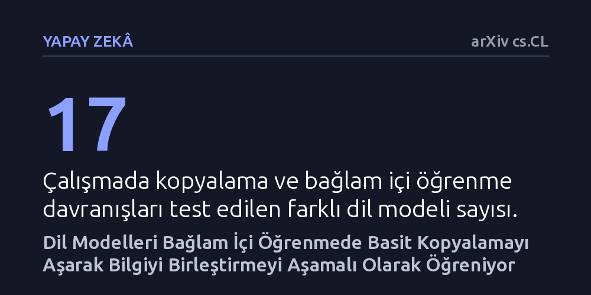

YAPAY-ZEKA · arXiv cs.CL · 2026-10-16
Araştırmacılar, 17 farklı dil modelini inceleyerek modellerin verilen örnekleri yalnızca kopyaladığını mı yoksa bilgiyi birleştirip kurala göre mi çıkarım yaptığını test etti. Modellerin bağlam içi öğrenmeyi tek parça halinde değil; kopyalamadan kural birleştirmeye uzanan farklı aşamalarla edindiği bulundu.
Yapay zekanın kendisine verilen örnekleri körü körüne taklit etmediğini, doğruluk oranı henüz artmadan bile kuralı çözüp bilgiyi birleştirme mekanizmasını arka planda geliştirmeye başladığını gösteriyor.

Büyük dil modelleri, kendilerine verilen bir iki örneği görünce şaşırtıcı biçimde yeni görevleri çözebilmektedir. Yapay zeka dünyasında "bağlam içi öğrenme" olarak adlandırılan bu yetenek sayesinde modele kalıcı bir ağırlık güncellemesi yapmadan, yalnızca ekrandaki isteme birkaç örnek yazarak çeviri, sınıflandırma ya da özetleme yaptırabiliyoruz. Ancak bu durum uzun süredir temel bir şüpheyi de beraberinde getirmektedir: Model gerçekten girdi metnindeki kuralları anlayıp bilgiyi birleştirerek mantıklı bir sonuca mı varıyor, yoksa yalnızca kendisine en yakın duran örneği körü körüne taklit mi ediyor?
Bir yapay zeka modelinin testlerde yüksek doğruluk puanı alması, arka planda hangi mekanizmanın çalıştığını tek başına açıklayamaz. Çünkü doğru cevap, bazen kuralı anlamaktan değil, yalnızca şans eseri yakındaki bir cevabı kopyalamaktan da kaynaklanabilir. Bu iki davranışı birbirinden ayırmak yapay zekanın güvenilirliği ve nasıl akıl yürüttüğü açısından kritik önem taşır; zira ezbere dayalı bir model en küçük kural değişikliğinde çökerken, kuralı kavrayan bir sistem bambaşka görevlere başarıyla uyarlanabilir.
Araştırmacılar, modellerin taklit ile kural birleştirmeyi nasıl ayırdığını görmek amacıyla 17 farklı dil modelini kapsayan kontrollü bir tanısal test geliştirdi. Bu testlerde modele sunulan metin öyle tasarlandı ki, model iki seçenek arasında bir çatışmaya itildi: Bir tarafta metnin en yakınında duran cevabı doğrudan kopyalamak, diğer tarafta ise metnin geneline yayılmış kural ve tanımları takip ederek doğru sonuca ulaşmak. Böylece modelin verdiği yanıt, ezberci bir kopyacı mı yoksa kural takipçisi mi olduğunu doğrudan açığa çıkardı.
Deney yalnızca hazır modelleri test etmekle sınırlı kalmadı. Araştırma ekibi modellerin eğitim süreçlerinde kaydedilmiş durum kopyalarını (checkpoint) geriye doğru inceleyerek bu becerinin zaman içinde nasıl geliştiğini adım adım izledi. Buna ek olarak, sonları tanımlayıp sorgulayan sentetik belgeler ve etiket anlamlarının bilerek değiştirildiği yeniden yazılmış gerçek metinlerle kontrollü eğitim deneyleri yürütülerek, hangi tür verinin modelleri kural birleştirmeye yönelttiği incelendi.
İncelenen 17 model arasında belirgin bir davranış ayrışması saptandı. Modellerin yaklaşık üçte birinin yakındaki örneği doğrudan kopyalamayı tercih ettiği, az sayıda modelin kararsız kaldığı, geri kalanların ise kurala uygun cevabı seçtiği belirlendi. Kurala sadık kalan modellerin genel doğruluk oranlarının çok daha yüksek olduğu ve en yakındaki çelişkili örnek yerine kuralın gerektirdiği hedefe odaklandıkları gözlemlendi.
Çalışmanın en çarpıcı bulgusu ise eğitim süreci analizlerinde ortaya çıktı. Modeller, genel doğruluk oranları henüz rastgele tahmin seviyesini bile aşmamışken, yani dışarıdan bakıldığında hiçbir şey öğrenememiş gibi görünürken, istemdeki görevle ilgili kural belirteçlerine çelişkili örneklere kıyasla öncelik vermeye başlıyordu. Başka bir deyişle yapay zeka, doğru çıktıyı üretmeye başlamadan çok daha önce arka planda doğru bilgiye dikkat kesilme mekanizmasını inşa etmekteydi.
Yapılan eğitim deneyleri, modellerin bu davranışı nasıl kazandığına dair önemli ipuçları sundu. Tanımların yapılıp ardından sorgulandığı sentetik belgelerle eğitilen modeller, kopyalamayı bırakıp bilgiyi birleştiren yanıtlar vermeye yöneldi. Gerçek metinlerdeki etiket tanımlarının yeniden düzenlenmesiyle yapılan ince ayarlar ise modellerin istemdeki değişen kurallara hızla uyum sağlamasını kolaylaştırdı.
Bu sonuçlar, yapay zekada bağlam içi öğrenmenin bir anda ortaya çıkan tek ve homojen bir yetenek olmadığını göstermektedir. İstemin denetimi, cevap tercihi, seçenek olmadan yanıt oluşturma ve bilginin aktarımı gibi unsurlar birbirinden bağımsız yollardan ve farklı hızlarda gelişmektedir. Dolayısıyla modelleri daha yetkin kılmak için genel doğruluk puanlarına takılıp kalmak yerine, bu bağımsız öğrenme basamaklarını doğrudan hedefleyen eğitim yaklaşımları geliştirmek gerekmektedir.